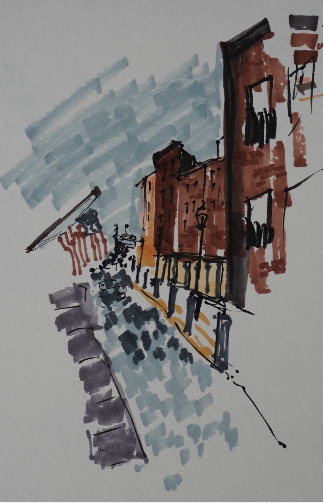
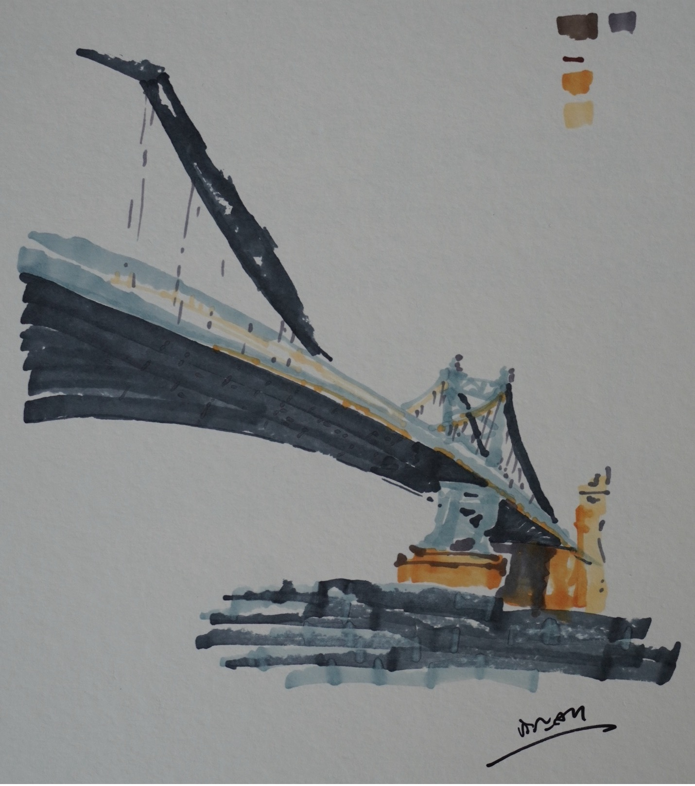
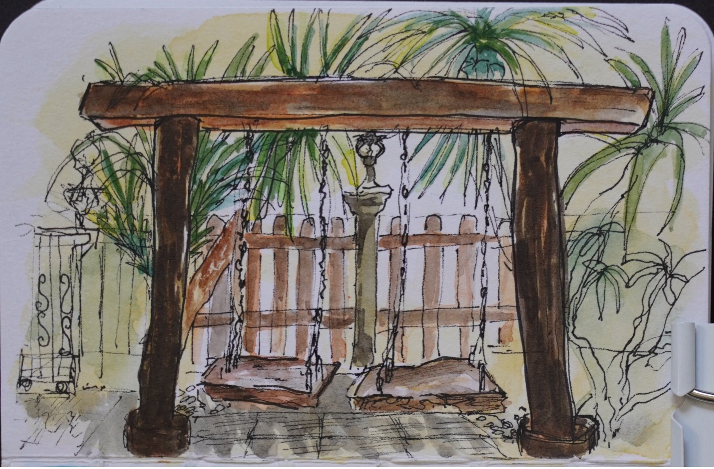

About
I'm a first-year Cognitive Science PhD student at Rensselaer Polytechnic Institute, working on semantic agents. I have research experience across cognitive science and computer science, with publications in cognitive psychology and physics, and presentations at several conferences.
My research interests include computational neurolinguistics, speech comprehension, Bayesian cognition, machine-brain resource rationality, fMRI, natural language processing, neural networks, and the cognitive neuropsychology of language. My true passion lies in teaching — bringing wonder, self-confidence, and opportunities to others.
Highlights
Education
PhD in Cognitive Science, Rensselaer Polytechnic Institute — first-year student working on semantic agents (expected 2030).
BA in Cognitive Science (Honors), Johns Hopkins University, 2025 — Phi Beta Kappa, GPA 3.99, Glushko Prize for Outstanding Undergraduate Cognitive Scientist.
Selected Research
- Co-author on Effector-independence in writing (McCloskey et al., 2025), Journal of Experimental Psychology: Human Perception and Performance.
- Three years at the JHU Cognitive Neuroscience Lab studying motor plans in writing; additional work on Thai NLP datasets and tone in speech recognition.
Teaching
- Teaching assistant at RPI (Introduction to Cognitive Science) and across five courses at JHU spanning cognitive development, linguistics, and computer science.
- 150+ office-hour hours mentoring undergraduates in Data Structures; previously taught Python and C++ to students in rural Thailand.
Honors
- Royal Thai Scholarship — awarded to one Cognitive Science scholar per cohort by the Thai Ministry of Higher Education.
- Glushko Outstanding Undergraduate Cognitive Scientist Prize, 2025.
- Phi Beta Kappa, Johns Hopkins University.
Languages
Fluent in English and Thai. Conversational in Spanish, Japanese, and French.
Use the tabs above for full research, teaching, software, and creative work — or click All for everything on one page. ดูประวัติย่อภาษาไทยได้ที่แท็บ ภาษาไทย
ประวัติย่อ — สอนภาษาศาสตร์
สวัสดีค่ะ ดิฉันเอย ขวัญลดา ศรีจอมขวัญ ปัจจุบันเป็นนักศึกษาปริญญาเอกสาขา Cognitive Science ปีที่ 1 ณ Rensselaer Polytechnic Institute สหรัฐอเมริกา ทำงานวิจัยด้าน Language-Endowed Artificial Intelligence (LEIA) มีประสบการณ์สอนและช่วยสอนวิชาภาษาศาสตร์เบื้องต้น พัฒนาการภาษา และ cognitive neuroscience ทั้งในระดับมหาวิทยาลัยและการสอนพิเศษ
ประวัติการศึกษา
- กำลังศึกษาปรัชญาดุษฎีบัณฑิต ด้าน Cognitive Science ปีที่ 1 ณ Rensselaer Polytechnic Institute สหรัฐอเมริกา หัวข้องานวิจัย Language-Endowed Artificial Intelligence (LEIA)
- สำเร็จการศึกษาภาควิชา Cognitive Science มหาวิทยาลัย Johns Hopkins สหรัฐอเมริกา ความเชี่ยวชาญ: ภาษาศาสตร์, computational approach to cognition, cognitive neuroscience
ประสบการณ์ทำงานเกี่ยวกับภาษาศาสตร์
- ปัจจุบัน รับตำแหน่งผู้ช่วยสอนและวิทยากรบรรยายพิเศษ (Guest Lecturer) วิชา Introduction to Cognitive Science ณ Rensselaer Polytechnic Institute หัวข้อภาษาศาสตร์เบื้องต้น พัฒนาการภาษา พัฒนาการปัญญา และ cognitive neuroscience นักเรียนมากกว่า 50 คน
- ผู้ช่วยสอนวิชาภาษาศาสตร์เบื้องต้น (Language and Mind) ณ Johns Hopkins University นักเรียนกว่า 80 คน
- เสนอผลงานวิจัยทางภาษาศาสตร์ “Tone Assignment of English Loanwords in Thai” ณ DREAMS (Day of Undergraduate Research in Engineering, Arts, Medicine, and the Sciences) 2022, Johns Hopkins University
ประสบการณ์ทำงาน / ประสบการณ์สอน
- ผู้ช่วยสอนวิชาพัฒนาการปัญญา (Cognitive Development) ณ Johns Hopkins University สหรัฐอเมริกา เทอม Spring 2024 และ 2025
- ผู้ช่วยสอนวิชา Data Structures (วิชาเขียนโปรแกรมเบื้องต้น โครงสร้างข้อมูล) ณ Johns Hopkins University
- พี่ช่วยน้อง สอวน. ภูมิศาสตร์ ศูนย์มหิดลวิทยานุสรณ์ ปี 2561–2563
- ผู้แทนประเทศไทย เหรียญทองแดง การแข่งขันภูมิศาสตร์โอลิมปิกนานาชาติ ประจำปี 2018 ณ Quebec, Canada
- เหรียญทอง อันดับที่ 3 ของประเทศ การแข่งขันภูมิศาสตร์โอลิมปิกระดับชาติ ปีการศึกษา 2561
- ประสบการณ์สอนพิเศษตัวต่อตัวกว่า 8 ปี วิชา สอวน. คอมพิวเตอร์ (ค่าย 1–2) ทบทวนบทเรียนวิชาคณิตศาสตร์ วิทยาศาสตร์ ภาษาอังกฤษ ภาษาอังกฤษเพื่อการสนทนา Neural Network ฯลฯ
สนใจติดต่อสอบถามหรือเรียนพิเศษ ดูข้อมูลติดต่อด้านล่าง หรืออีเมล srijok@rpi.edu
Education
PhD in Cognitive Science
Expected May 2030
Rensselaer Polytechnic Institute · Troy, NY
BA in Cognitive Science (Honors), Phi Beta Kappa
May 2025
Johns Hopkins University, Krieger School of Arts & Sciences · Baltimore, MD
- GPA: 3.99 · Dean's List Fall 2021–Spring 2025
- 2025 Glushko Outstanding Undergraduate Cognitive Scientist Prize
- Coursework across Linguistics, Computer Science, and the Writing Seminars
Research Experience
Research Assistant — Cognitive Neuroscience Lab
Jan 2023 – Present
Johns Hopkins University · Advisor: Michael McCloskey
- Investigate cognitive representations of motor plans in writing, focusing on effector (in)dependence.
- Design experiments addressing how transfer of writing motor plans between effectors introduces latency.
- Recruit and collect data from 40–50 participants per semester via the SONA Psychology Research Portal.
- Code and analyze writing stroke patterns and reaction-time data.
Researcher — Center for Speech and Language Processing
Sep 2023 – Dec 2023
Johns Hopkins University · Advisor: Kenton Murray
- Created a review of available Thai-language datasets for NLP training, machine learning, and machine translation.
Research Assistant — Phonetics and Phonology Lab
Aug 2022 – May 2023
Johns Hopkins University · Advisor: Colin Wilson
- Investigated the role of tone in Thai automatic speech recognition.
- Conducted a study on tone assignment of English loanwords in Thai.
Undergraduate Researcher — Mentored by Jane Li, PhD Candidate
Jan 2022 – May 2022
Johns Hopkins University
- Researched morphological representation of English plural morphemes.
- Annotated speech data using Praat; piloted experiments and ran participants in a sound booth.
Publications & Presentations
McCloskey, M., Im, E., Wong, K., Luo, E., Upadya, N.,
Srijomkwan, K., Chen, C. (2025). Effector-independence in writing.
Journal of Experimental Psychology: Human Perception and Performance, 51(5), 643–663.
doi.org/10.1037/xhp0001308
"Effector Independence in Writing." Omega Psi Annual Cognitive Science Conference, Johns Hopkins University, 2024.
"Tone Assignment of English Loanwords in Thai." DREAMS Showcase, Johns Hopkins University, 2022 (poster).
Teaching Experience
Teaching Assistant — Introduction to Cognitive Science (COGS2120)
Aug 2025 – Present
Rensselaer Polytechnic Institute
- Develop and deliver 5 guest lectures on Neuroscience, Linguistics, and Cognitive Development.
- Improve course schedule and assignments to better serve 52 students per semester.
Teaching Assistant — Cognitive Development (AS.050.239/639)
Jan 2024 – May 2025
Johns Hopkins University
- Sole TA for up to 20 undergraduate and graduate students per semester, collaborating directly with faculty.
- Designed exam questions, graded coursework, and hosted weekly office hours and exam reviews.
Course Assistant — Data Structures (Java)
Jan 2023 – May 2025
Johns Hopkins University
- 150+ office-hour hours guiding students through debugging complex object-oriented programming projects.
- Graded 200+ coding assignments and exams in collaboration with a 10-CA team.
Teaching Assistant — Language and Mind (AS.050.102)
Aug 2024 – Dec 2024
Johns Hopkins University · Introductory Linguistics
- Held weekly recitations to guide students through linguistic problem sets.
- Co-designed assignments and exams with graduate teaching assistants.
Teaching Assistant — First Language Acquisition (AS.050.348/648)
Aug 2023 – Dec 2024
Johns Hopkins University · Upper-level linguistics & cognitive psych
- Supported students engaging with empirical literature on infant monolingual and bilingual language acquisition.
- Designed exam questions, graded coursework, and hosted weekly office hours.
Teaching Assistant — English Writing
Jun 2023 – Jul 2023
Brewster Academy · Wolfeboro, NH
- Supported Thai international students with academic writing — position papers, literary analysis, and scientific writing.
Computer Science Tutor
Apr 2018 – Oct 2019
Apiriya Weerapotchananan · Phichit, Thailand
- Taught Python and C++ to students in my rural hometown, preparing them for nationwide computer science competitions.
STEM Tutor
Nov 2018 – Feb 2019
Salinrat Kittiweerawong · Nakorn Pathom, Thailand
- Conducted one-on-one in-home tutoring for grades 5–7 — developed handouts, study materials, and quizzes.
Software & Technical Work
NLP Research — Thai Language Dataset Review
Sep 2023 – Dec 2023
Center for Speech and Language Processing, Johns Hopkins University
- Reviewed Thai-language datasets for NLP training, machine learning, and machine translation use cases.
Course Assistant — Data Structures (Java)
Jan 2023 – May 2025
Johns Hopkins University
- Helped 200+ students debug complex OOP assignments covering lists, stacks, queues, trees, heaps, graphs, hash tables, and sorting/searching.
Selected Coursework
Foundations of Neural Network Theory
Human Language Technology
Computational Cognitive Neuropsychology
Data Structures (Java)
Intermediate Programming (C/C++)
Technical Skills
Python (PyTorch)
Java
C / C++
R (Stan / Bayesian)
MATLAB (PsychToolBox)
SPM12 (fMRI)
Praat
Git
Creative Work
Alongside research and teaching, I make visual art and write fiction and poetry. I minored in the Writing Seminars at Johns Hopkins.
Visual Art



Writing
I write fiction and poetry across realist, speculative, and mythic registers — often returning to Thai landscapes, ancestral ritual, and language as a kind of pattern or code.
Published
Three poems
2024
- “If You Saw Me at Rumney, NH”
- “The Dog-Eared Book”
- “Portrait of the Artist as Taphanhin, Thailand”
“Knitting Code” — flash fiction
2023
JHU Digital Media Center, 1st Magazine
My mother was a seamstress, and this is a list of what she'd made for me:
My favorite safety blanket. Heavy like a mother's hug, softer than clouds.
Tiny baby socks, old-rose color, with tiny clementines dangling on the sides — to commemorate an infancy I've never had.
Selected Work in Progress
“Incense” — short fiction
Unpublished
One of the strangest interludes in my life was the time I stopped subsisting on grave offerings. It was Cheng Méng day, April 2009, and the sun dawned hot and vengeful, as always. The foraging was always good this time of the year, and by four in the morning I was well-nourished, redolent with the smell of incense, bathed in the ashes of gold papers, and was ready to take a well-deserved nap.
“The Great Chalawan” — short fiction
Unpublished · A Thai myth retold as the diary of a 25-foot crocodile
Mercy. Harmony. Responsibility. Grand Uncle or no, the old crocodile should just shut up and make his way to heaven already. The ancient creature could barely move anymore, and in human form he could only sit in one place and meditate. How could one rule the rivers without daily seeing her blessings for oneself?
Quarden — novel in progress
First draft · Stand-alone fantasy, first of a planned four-book series
A fantasy novel (with young-adult crossover appeal) — designed to read as a complete story on its own while opening into a larger four-book arc.
Leadership & Mentorship
Senior Advisor / Co-President — Omega Psi Cognitive Science Society
May 2023 – Present
Johns Hopkins University
- Increased event participation by 40% in first semester as Co-President; organized 5–6 academic events per semester.
- Mentor first-year cognitive science students in course selection and research.
- Now serve as Senior Advisor, mentoring co-presidents and collaborating with the National Omega Psi Cognitive Science Society.
Co-President — Thai Student Association
May 2023 – May 2024
Johns Hopkins University
- Re-founded the Thai Student Association at JHU, raising awareness of Thai and Southeast Asian culture through inclusive campus events.
Honors & Awards
- Royal Thai Scholarship (Apr 2020 – Present) — National scholarship awarded to one Cognitive Science scholar per cohort for undergraduate through doctorate study abroad. Thailand Ministry of Higher Education, Science, Research, and Innovation.
- Glushko Outstanding Undergraduate Cognitive Scientist Prize (2025) — Johns Hopkins University.
- Phi Beta Kappa — Johns Hopkins University.
Languages
Fluent in English and Thai. Conversational in Spanish, Japanese, and French.